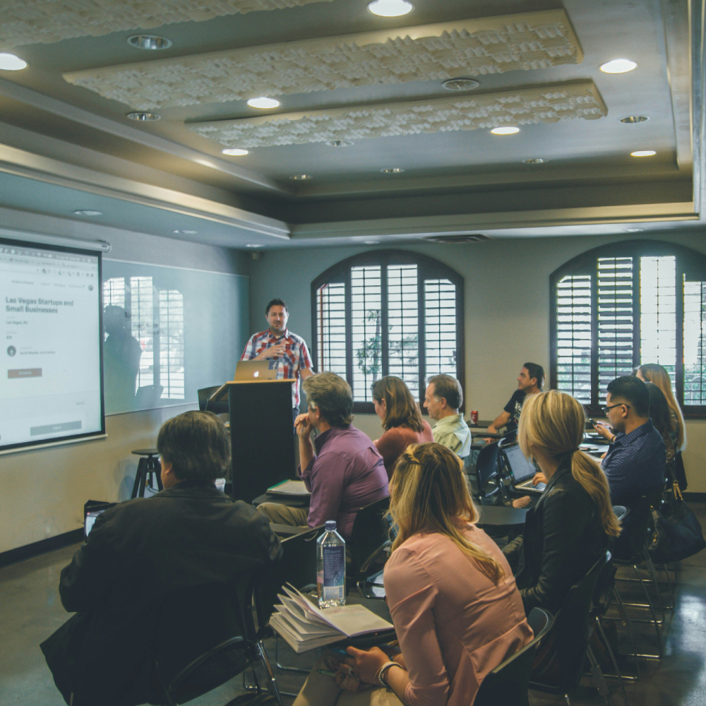

At KFCRI (Kovise Foundation Conflict Resolution International), we provide a comprehensive suite of services in arbitration and alternative dispute resolution (ADR). Each service has been carefully designed to uphold neutrality, efficiency, and professional excellence, while fostering institutional credibility, global alignment, and a strong commitment to capacity building. Beyond resolving disputes, KFCRI actively invests in nurturing the next generation of ADR professionals through structured training programmes, accreditation pathways, internships, and collaborative initiatives with academic and corporate institutions. This dual focus—on delivering reliable dispute resolution and building sustainable professional capacity—ensures that KFCRI remains not only a trusted service provider but also a catalyst for growth and innovation in the ADR ecosystem.
Independent appointing authority from a diversified panel of experts.
KFCRI functions as an independent appointing authority, facilitating the appointment of Arbitrators from its diversified panel of experts.
Our panel spans industries and regions, ensuring that every dispute is matched with the right Arbitrator who brings subject-matter competence, neutrality, and efficiency to the forefront. The appointment process is carried out in strict compliance with the Arbitration and Conciliation Act, 1996, with customized turnaround times (TAT) and transparent communication maintained throughout.
Over the years, KFCRI has facilitated arbitrator appointments in thousands of banking, financial, and domestic disputes. Our institution has earned the trust of leading financial and corporate entities who have collaborated with us under such arrangements.
End-to-end case management for arbitration proceedings
KFCRI offers end-to-end case management for arbitration proceedings, acting as a trusted institutional arbitration service provider.
We take responsibility for appointing arbitrators, communicating on behalf of tribunals, maintaining records, and ultimately securely preserving proceedings. Every matter is governed by KFCRI Arbitration Rules, which ensure procedural clarity, neutrality, and fairness throughout the process.
Our approach is designed to create a structured and predictable environment where disputes can be resolved efficiently. From the moment a case is invoked, KFCRI sets out a clear timeline, communicates transparently with all parties, and ensures that arbitrators are supported with the resources they need to conduct proceedings effectively.
In order to ensure the efficiency of dispute resolution even during the unprecedented challenges of COVID-19, KFCRI introduced an innovative framework known as Virtual Dispute Resolution (VDR) Rules. This initiative stands as a testament to KFCRI’s unwavering commitment to making dispute resolution predictable, structured, and accessible, regardless of external circumstances.
A vetted, neutral, and transparent pool of professionals.
KFCRI maintains a distinguished and annually updated panel of arbitrators across diverse domains.
KFCRI maintains a distinguished and annually updated panel of arbitrators across diverse domains, offering institutions access to a vetted, neutral, and transparent pool of professionals. To strengthen credibility and ensure subject-matter competence, KFCRI maintains separate and carefully curated panels at both the national and international level, allowing disputes to be matched with arbitrators best suited to the context in which they arise.
Our panels reflect diversity in expertise, geography, and industry, and KFCRI has facilitated arbitrator appointments in thousands of banking, financial, and domestic disputes, underscoring the scale and reliability of our institutional role. In addition, KFCRI has consistently championed diversity and inclusion by encouraging the empanelment of young and women arbitrators, thereby broadening participation and representation in the ADR ecosystem.
A Building ADR capacity through certificate courses and workshops.

KFCRI is deeply invested in training and knowledge-sharing to build ADR capacity for the future.
We conduct certificate courses, workshops, and webinars tailored for students, professionals, and institutions. Our Summer and Winter Schools offer intensive academic and practical exposure through lectures, workshops, and mock proceedings. Joint programmes with colleges and universities, delivered through MoUs, integrate ADR education into curricula and foster mentorship.
To date, KFCRI has conducted over 40 structured training programmes globally and participated in 100+ seminars and conferences, while also organizing ADR Roadshows at 25+ institutions to engage directly with the next generation of legal professionals.
Structured Accreditation Pathways across all major ADR disciplines
KFCRI offers structured Accreditation Pathways across all major ADR disciplines.
Certifying competence at multiple levels and ensuring that professionals are institutionally aligned and globally recognized. These pathways are designed to provide a clear progression for practitioners, combining mandatory training, rigorous assessment, membership subscription, and continuous engagement.
In arbitration, professionals can advance through four levels — Associate (AAP-KFCRI), Affiliate (AfAP-KFCRI), Fellow (FAP-KFCRI), and Proficient (PAP-KFCRI) — each reflecting increasing depth of expertise and responsibility. Mediation accreditation is offered at Associate (AMP-KFCRI) and Fellow (FMP-KFCRI) levels, while conciliation is recognized through the Accredited Conciliator (AcC-KFCRI) credential. Negotiation expertise is certified through the Accredited Negotiator (AcN-KFCRI) programme, and tribunal secretaries are trained and accredited under the AcTS-KFCRI pathway, equipping them to support complex proceedings with precision.
These programmes are not only academic in nature but are designed to build practical competence, ensuring that accredited professionals can contribute effectively to institutional proceedings. To date, over 200 professionals from diverse fields have been accredited through KFCRI’s programmes, reflecting the institution’s commitment to interdisciplinary ADR education and capacity building. By maintaining structured pathways across arbitration, mediation, conciliation, negotiation, and tribunal secretaryship, KFCRI ensures that accreditation remains dynamic, credible, and aligned with both domestic and international standards of practice.
Structured internship programmes for students and young professionals.
KFCRI provides structured internship programmes, both in-person and online, for students and young professionals.
Interns gain hands-on exposure to arbitration, mediation, conciliation, and negotiation proceedings, while also receiving practical training in research, drafting, and case analysis. Mentorship from globally accredited practitioners bridges the gap between academic learning and professional practice. KFCRI has already trained and inducted over 200 interns, many of whom have served as tribunal secretaries in more than 120 cases in the past year alone, underscoring our role in nurturing the next generation of ADR professionals.
If you wish to intern with us, please reach out through the Careers tab on our website. We would be more than happy to have you on board.
Flagship academic initiatives in arbitration and mediation.
KFCRI organizes intensive Winter and Summer Schools that serve as flagship academic initiatives in arbitration and mediation.
These Schools are designed to provide participants with a blend of academic rigour and practical exposure, combining lectures, workshops, and mock proceedings. They create a focused environment where students and young professionals can engage deeply with ADR concepts, while also applying them in simulated practice.
When delivered in collaboration with leading law schools and institutions, the Winter and Summer Schools integrate mentorship from experienced practitioners and accredited professionals. Participants gain not only theoretical knowledge but also hands-on skills in case preparation, tribunal management, and procedural analysis. By fostering structured learning and practical engagement, these Schools help bridge the gap between classroom study and professional practice, preparing participants to contribute meaningfully to the ADR ecosystem.